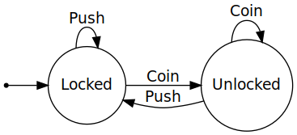
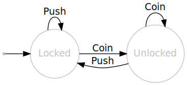
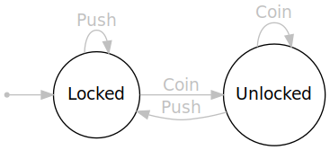

Complex, Dependent, Interactive, Insidious
getLunch "fishy" == TunaSalad getLunch "spicy" == HalfChicken ExtraHot
forAll text becomes forAll lunchTypeProperty-based testing, lifted to the level of application behaviour.
randomised inputs for actions
define actions independently, let the package generate workflows
you thought shrinking was cool before…
a failure will produce:
Right?
track expectations/awareness regarding the 'state' of the world
Represents the transitions, not the states.



new feature ~ new Command(s)
Learn the weirding way!
Use classification to understand your test-case distribution